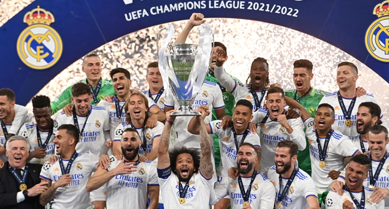

Real Madrid

14 times Champions League winners
AC Milan
7 times Champions League winners

Liverpool

6 times Champions League winners

Bayern

6 times Champions League winners

Barcelona

5 times Champions League winners

Ajax

4 times Champions League winners

Man. United

3 times Champions League winners

Inter Milan

3 times Champions League winners


.svg.jpg)